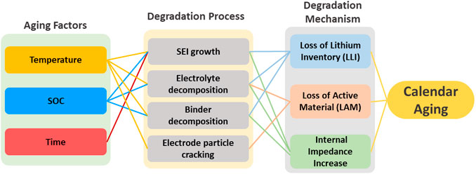
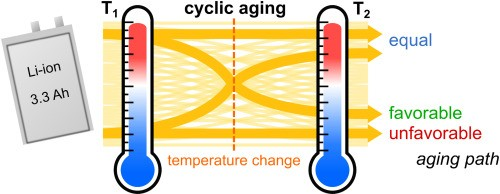
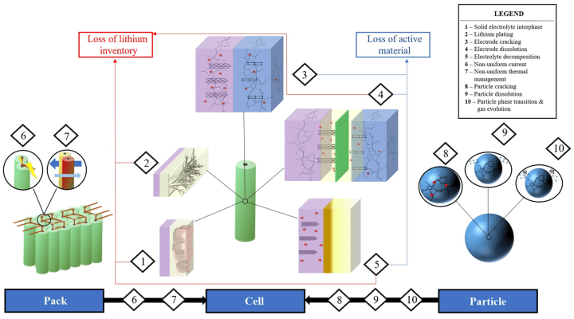
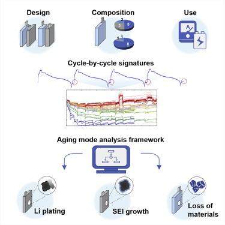
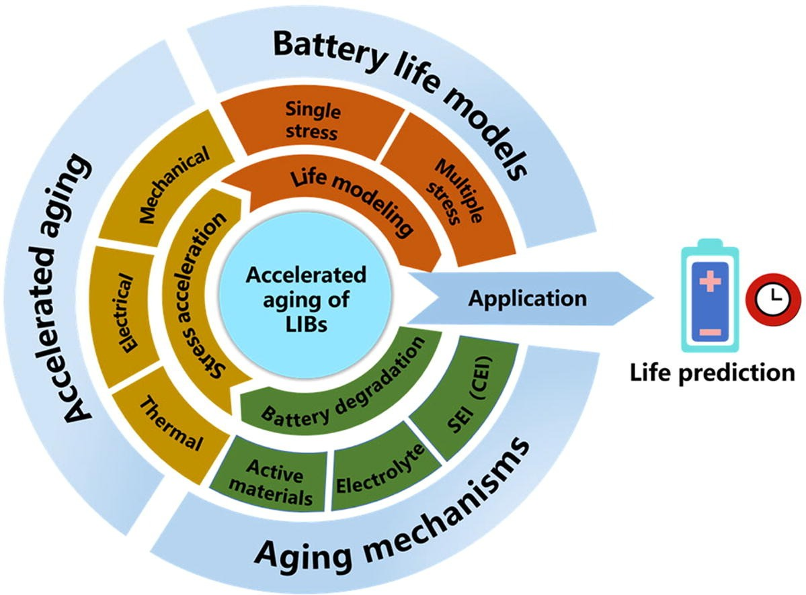
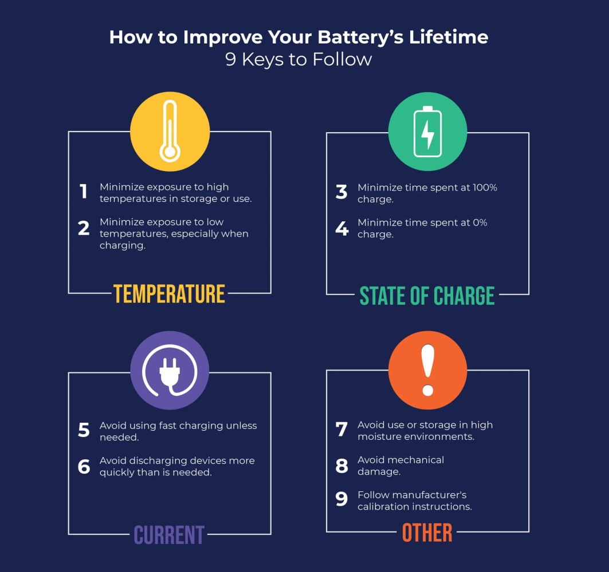

Battery aging is the gradual decline in performance and capacity of lithium-ion batteries over time, affecting everything from consumer electronics to large-scale energy storage systems. Recent research has revealed significant advancements in understanding degradation mechanisms and developing effective strategies to extend battery lifespan.
Studies show that proper management can extend battery life from an average of 1,500 cycles to potentially 12,000 cycles in some cases, while proper temperature control and state of charge management remain foundational to battery health.
Defining Battery Aging
Battery aging refers to the gradual decline in performance and efficiency of batteries over time due to chemical, physical, and environmental factors that degrade internal components. For lithium-ion batteries, this aging process primarily occurs through the breakdown of active materials, electrolyte decomposition, and the formation of a solid electrolyte interface (SEI) layer. These changes progressively reduce the battery's ability to store and deliver energy effectively. Understanding this process is crucial for optimizing battery performance across various applications, from consumer electronics to large-scale energy storage systems.
What Causes Battery Aging?
Battery aging occurs through two primary mechanisms: calendar aging and cyclic aging. Calendar aging happens when a battery degrades over time even without use, strongly influenced by storage conditions. A four-year study on LiFePO4 batteries revealed that calendar aging significantly contributes to capacity loss, with batteries stored at higher temperatures experiencing accelerated degradation1. For instance, at 25°C and 50% state of charge (SOC), models predicted a lifespan of 23.8 years before capacity dropped to 80%.

Cyclic aging, in contrast, results from repeated charge and discharge cycles that stress the battery's internal structure. Every time a battery undergoes a charge-discharge cycle, its capacity diminishes slightly, with deeper discharges placing more stress on the battery. High charge rates and frequent use exacerbate this wear, leading to reduced capacity and performance over time. These two aging mechanisms often work in parallel, compounding their effects on battery health.

Internal Chemical Changes During Aging
Electrolyte Breakdown: Electrolytes help ions flow between anode and cathode. Over time, they degrade and reduce performance.
SEI Layer Formation: In lithium-ion batteries, a Solid Electrolyte Interphase (SEI) layer forms naturally during charging. But with age, it thickens, reducing efficiency.
Lithium Plating and Dendrites: Charging too fast or at cold temperatures can cause lithium to plate on the anode, forming dangerous dendrites (tiny spikes) that can short-circuit the battery.

Impact on Battery Performance Parameters
As batteries age, three key parameters show measurable deterioration:
- Capacity reduction - The amount of energy a battery can store gradually decreases
- Internal resistance increase - The battery's efficiency drops as resistance grows
- Overall life cycle reduction - The total useful lifetime of the battery shortens
A comprehensive dataset containing over 3 billion data points from lithium-ion cells demonstrated that both calendar and cyclic aging contribute to these changes. The increased internal resistance leads to inefficiency and heat generation during operation, while reduced capacity directly limits the battery's runtime. Interestingly, research has shown that dynamic discharge profiles can enhance battery lifetime by up to 38% compared to constant current discharge, suggesting that how batteries are used significantly impacts their longevity.
Factors Accelerating Battery Degradation
Chemical Wear and Tear
The chemistry inside lithium-ion batteries undergoes continuous changes that accelerate degradation. Cyclic degradation occurs with each charge-discharge cycle, gradually diminishing capacity. This is particularly pronounced with deeper discharges, which place more stress on the battery's internal structure. Even without use, calendar aging continues through internal chemical reactions influenced by temperature and state of charge. Batteries kept at high states of charge (close to 100%) and in warmer environments age significantly faster than those maintained at moderate charges and temperatures.
Overcharging and deep discharging represent particularly harmful practices for battery health. When a battery is frequently charged to 100% or discharged close to 0%, it experiences excessive voltage stress and structural strain. This accelerates capacity loss and can lead to dangerous heat buildup in extreme cases. Lithium-ion batteries are best kept between 20% and 80% state of charge to minimize these stressors and maximize lifespan.

Environmental Factors
Temperature plays a critical role in battery aging, with both high and low temperature extremes causing accelerated degradation. Elevated temperatures significantly accelerate the chemical reactions that break down battery components. A controlled study demonstrated that batteries stored at 45°C experienced dramatically faster capacity loss compared to those kept at 25°C. Conversely, extremely cold temperatures hinder efficient charging and discharging, placing additional stress on the battery.
Environmental humidity and exposure to vibration or physical stress can also impact battery longevity, particularly in applications like electric vehicles or industrial equipment. These factors underscore the importance of proper battery installation in controlled environments whenever possible.
Usage Patterns
How batteries are used daily significantly impacts their lifespan. High current loads, such as rapid acceleration in electric vehicles or fast charging protocols, increase internal resistance and accelerate degradation. Similarly, maintaining screen brightness at maximum levels on mobile devices creates unnecessary power demands that stress the battery.
Charging patterns also play a crucial role in battery health. Lithium-ion batteries experience added stress when left charging after reaching full capacity, as they repeatedly bounce between 99% and 100% charge, wasting energy and generating heat. This practice, common when phones are charged overnight, can significantly shorten battery lifespan over time.

Strategies to Extend Battery Lifespan
Optimal Charging Practices
Maintaining lithium-ion batteries within the optimal state of charge range (20% to 80% SoC) is fundamental to extending lifespan. By implementing SoC management algorithms in larger systems or simply being mindful of charge levels in consumer devices, users can significantly enhance battery longevity. This approach reduces stress on the battery chemistry and slows both calendar and cyclic aging processes.
For consumer electronics, avoiding overnight charging is particularly beneficial. Rather than keeping devices plugged in after reaching full charge, adopting short charging sessions throughout the day better preserves battery health. Similarly, avoiding deep discharges by recharging before batteries drop below 20% capacity helps maintain cell integrity and prolongs useful life.
Temperature Management
Temperature control represents one of the most effective strategies for extending battery life. For large-scale battery energy storage systems (BESS), incorporating active cooling systems and thermal management algorithms helps maintain optimal operating temperatures. Even consumer devices benefit from temperature awareness—keeping phones and laptops away from heat sources and avoiding use or charging in extremely hot environments.
A comprehensive study on LiFePO4 batteries confirmed that lower storage temperatures dramatically slow calendar aging, with batteries kept at room temperature degrading much more slowly than those exposed to higher temperatures. For critical systems, investment in thermal management technology offers significant returns through extended battery service life and improved reliability.

Advanced Monitoring and Management Systems
Battery Management Systems (BMS) play a crucial role in optimizing battery performance and lifespan. Advanced BMS technologies monitor key operational parameters such as voltage, current, and temperature while providing essential functions like state of charge estimation and cell balancing. These systems can identify potential issues before they become serious, allowing for preventative maintenance and optimal operation.
Regular monitoring of key performance indicators including round-trip efficiency, capacity fade, and energy throughput enables data-driven decisions that maximize battery longevity. In larger installations, SCADA (Supervisory Control and Data Acquisition) systems collect and analyze real-time data, empowering operators to optimize charging patterns and operating conditions for maximum battery life.
Usage Optimization for Consumer Devices
For everyday users of battery-powered devices, several simple practices can significantly extend battery life:
- Reducing screen brightness conserves power and reduces stress on the battery, as the display is typically the largest power consumer in mobile devices.
- Occasionally giving devices a "night off" from use allows batteries to rest and reduces cumulative stress, even if the device remains powered on.
- Avoiding charging to 100% whenever possible, as lithium-ion batteries experience additional stress at full charge.
- Implementing load leveling by closing unnecessary applications and services that consume power in the background.
These straightforward adjustments to usage patterns can collectively add months or years to a device's useful battery life.
Recent Innovations in Battery Lifespan Extension
Breakthrough Research from Fudan University
A groundbreaking development from Chinese researchers at Fudan University has shown remarkable potential for extending lithium-ion battery lifespan. The team developed a method to "refresh" old lithium-ion batteries by addressing the root cause of degradation: the formation of "dead lithium" deposits that reduce the concentration of active lithium ions in the electrolyte.
Through extensive experimentation and AI-driven molecular analysis, the researchers identified LiSO2CF3 as an ideal molecule for restoring lost lithium ions. This compound can be injected into the battery's active area, where it releases lithium ions back into the electrolyte. The process has demonstrated extraordinary results, increasing the average number of charging cycles from 1,500 to 12,000 in laboratory testing.
Limitations and Future Directions
While promising, the lithium regeneration technique currently has significant limitations. For the method to work, batteries must be specifically designed from the outset to accommodate the injection process and allow chemical byproducts to escape. This means existing batteries cannot benefit from this technology, but it points to an exciting future direction for battery design.
The research underscores how battery degradation resembles a disease progression, where a key component deteriorates while the rest of the system remains functional. This insight is driving new approaches to battery rejuvenation that could dramatically reduce electronic waste and improve the economics of battery-powered systems across industries.
Conclusion
The science behind battery aging reveals a complex interplay of chemical, physical, and usage factors that collectively determine battery lifespan. Calendar aging and cyclic aging proceed simultaneously, with temperature, state of charge, and usage patterns significantly influencing degradation rates. Understanding these mechanisms enables more effective strategies for extending battery life.